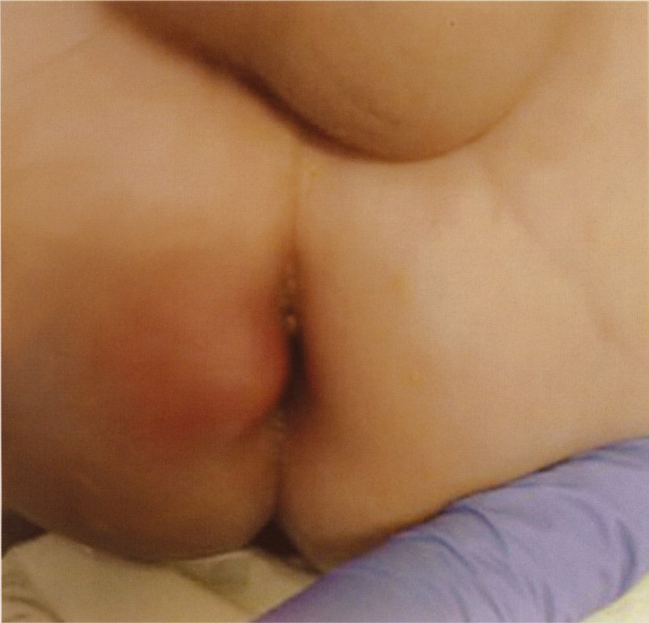
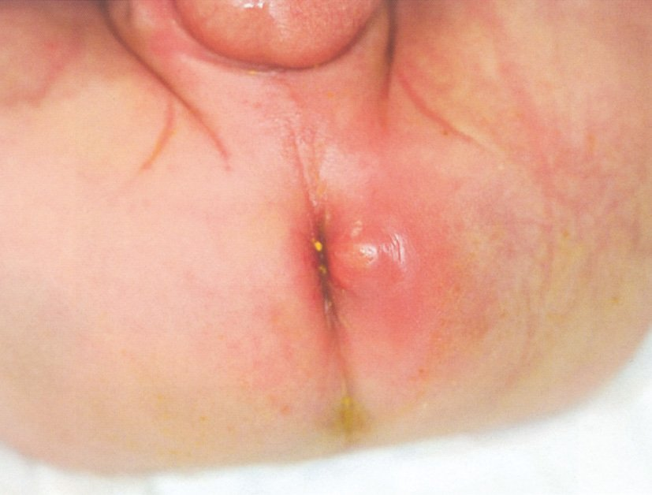
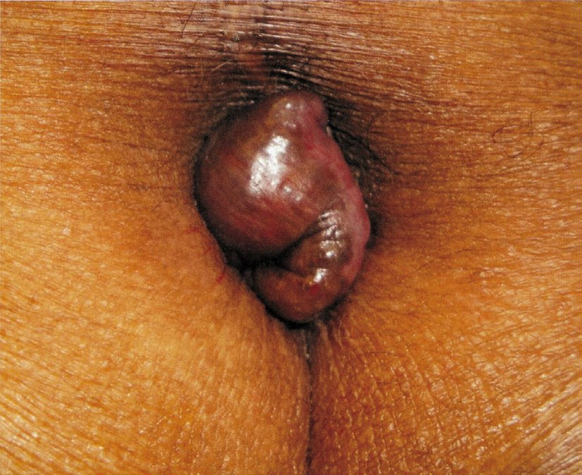
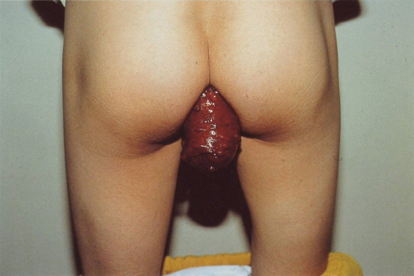
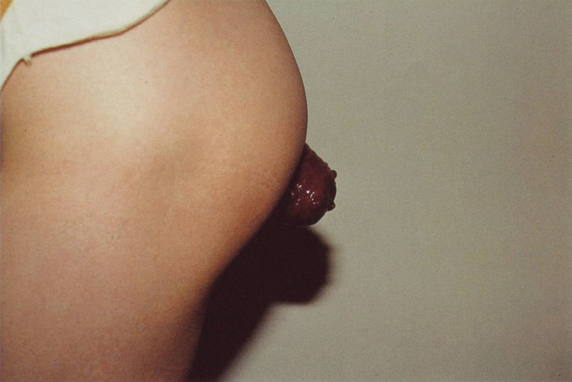
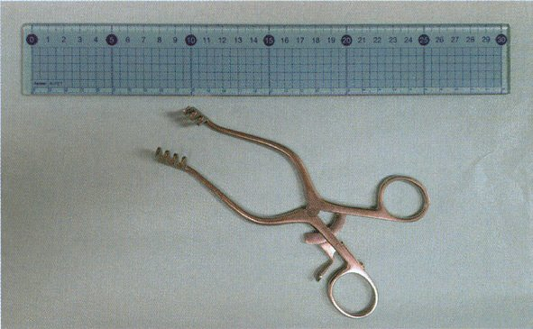
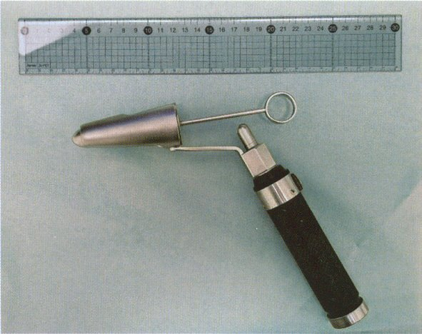
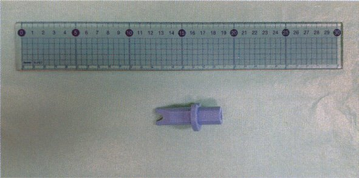
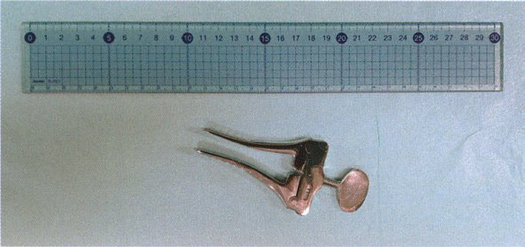
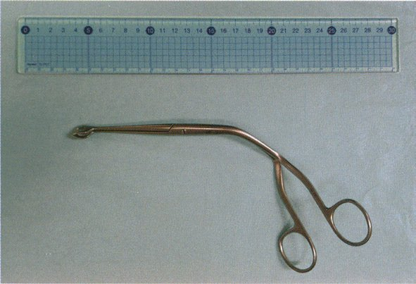

| 特徴 | 内容 |
|---|---|
| 特徴 | 内容 |
| 発症 | 肛門周囲膿瘍→自然破裂 or 切開→瘻管形成 |
| 症状 | 便意と無関係の膿性排液・発赤・腫脹 |
| 自然治癒 | なし（根治手術必要） |
| Crohn病 | 難治性痔瘻（多発・複雑型） |
| 肛門癌 | 長期瘻管から扁平上皮癌発生リスク |

| 特徴 | 内痔核 | 外痔核 |
|---|---|---|
| 特徴 | 内痔核 | 外痔核 |
| 発生部位 | 歯状線より口側 | 歯状線より肛門側 |
| 症状 | 無痛性出血（鮮血） | 疼痛（血栓形成で激痛） |
| 脱出 | 排便時に脱出（→嵌頓） | 脱出しない |
| 治療 | 結紮切除術 | 血栓除去・摘出術 |



| 度 | 所見 |
|---|---|
| 度 | 所見 |
| I度 | 出血のみ（脱出なし） |
| II度 | 排便時脱出→自然還納 |
| III度 | 排便時脱出→用手還納必要 |
| IV度 | 常時脱出→用手還納不能（嵌頓） |




